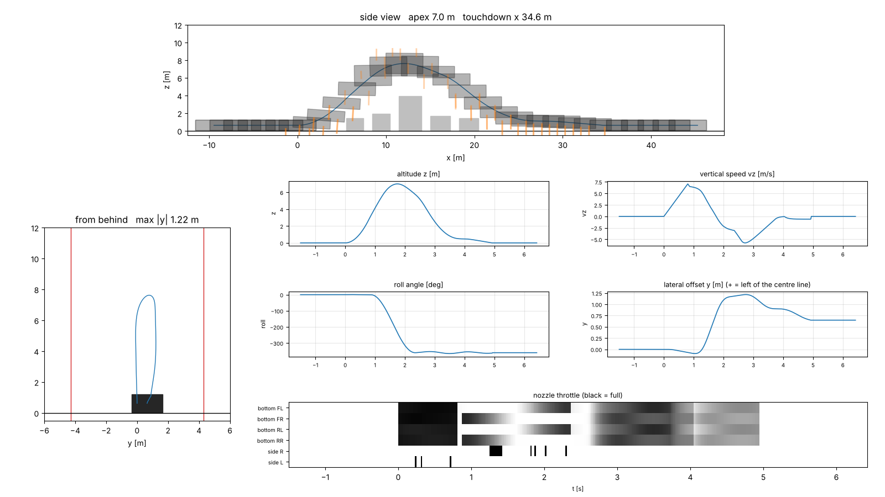

Roadster Hop: 6-DOF GNC Simulation
Simulation of the Tesla Roadster cold-gas thruster hop shown at its presentation: take-off, a full barrel roll over a lineup of cars, hover and landing. Dynamics, control and guidance written from scratch in Python, cross-checked against hand-derived equations.
Manoeuvre
- Powered take-off: the 4 floor nozzles push at 1.9 times the weight until the car climbs at 7 m/s.
- Full 360° barrel roll in 1.5 s over the lineup.
- Braking and a 0.5 m hover, with the floor nozzles throttled to hold altitude.
- Descent at 0.6 m/s and level touchdown about 35 m after take-off.
Dynamics
2000 kg rigid body with 13 states: position, velocity, attitude quaternion and body angular rates. Quaternion kinematics q̇ = ½ q·(0, ω) and Euler's equation I ω̇ = τ − ω × I ω, integrated with RK45 and stopped by a touchdown event. Six nozzles, four under the floor and one on each side near the front wheels, defined by position and direction, with torques from τ = Σ rᵢ × Fᵢ. No nozzle can push the car down.
Control
PD law on the quaternion error qe = qref*·q plus a feedforward of the torque the roll profile needs. A control allocator shares the commanded force and torques among the nozzles, like the motors of a drone: the four floor nozzles are throttled between 0 and 1 for lift, roll and pitch, and the two side nozzles fire on/off with a deadband for yaw. 50 Hz loop with zero-order hold.
Guidance
Full lift until the cut-off speed, a cosine roll profile from 0 to −360° with zero rate at both ends, a braking law vref = −√(2a(z − zhover)) that can always stop at the hover height, and an outer lateral loop that tilts the floor thrust to bring the car back to the runway centre line.

Validation
- 53 unit and closed-loop tests with pytest: the uncontrolled loop matches the free-flight integration, the roll ends level before braking, throttles stay within limits and the landing is soft.
- 2D trajectory preview generated in seconds, used to check each change before the 3D render.
- Maximum lateral drift of 1.2 m.
Simplifications
Constant mass, ideal nozzles with instant thrust, no aerodynamics or ground effect and perfect state knowledge. Thrust levels and nozzle positions are estimates from the demo footage, not data from the real car. Not affiliated with Tesla.